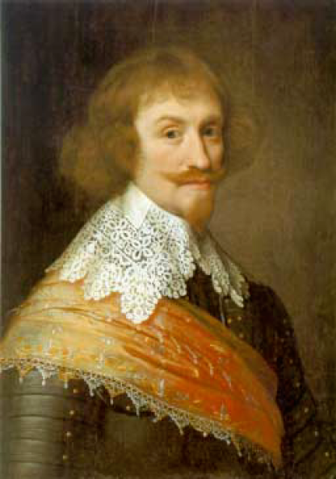
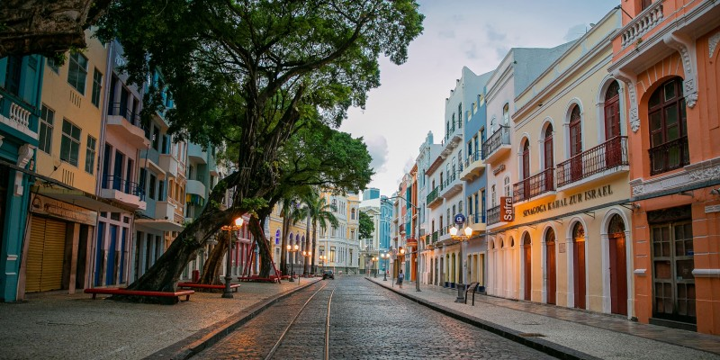
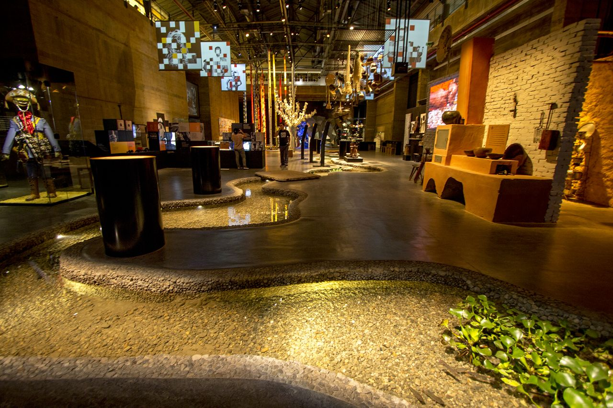
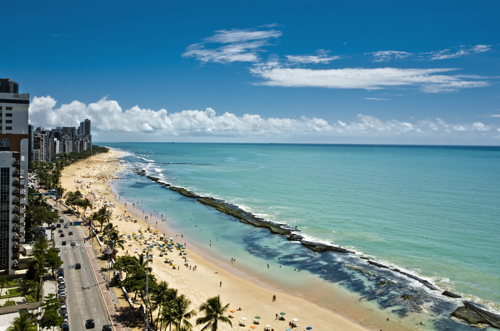
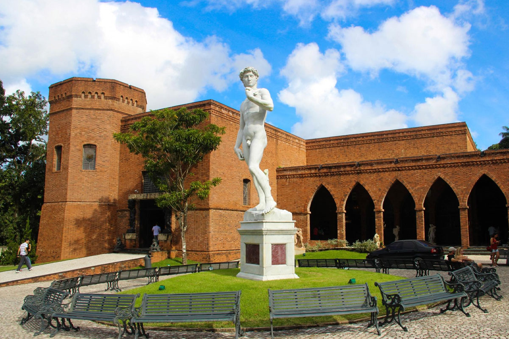
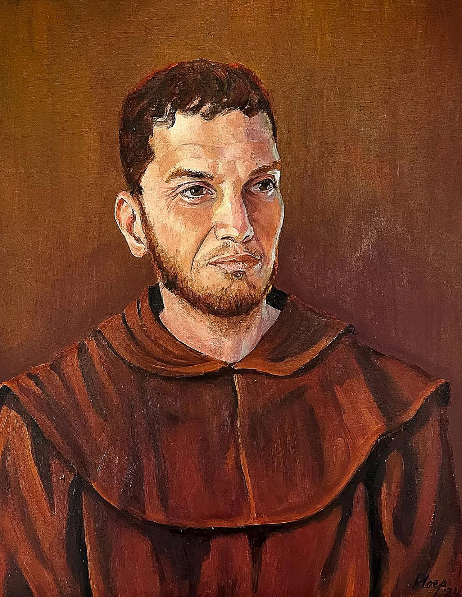
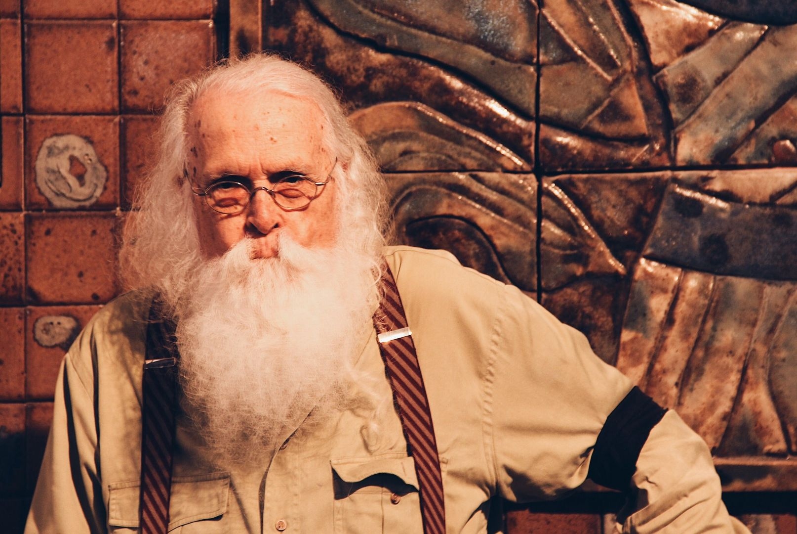
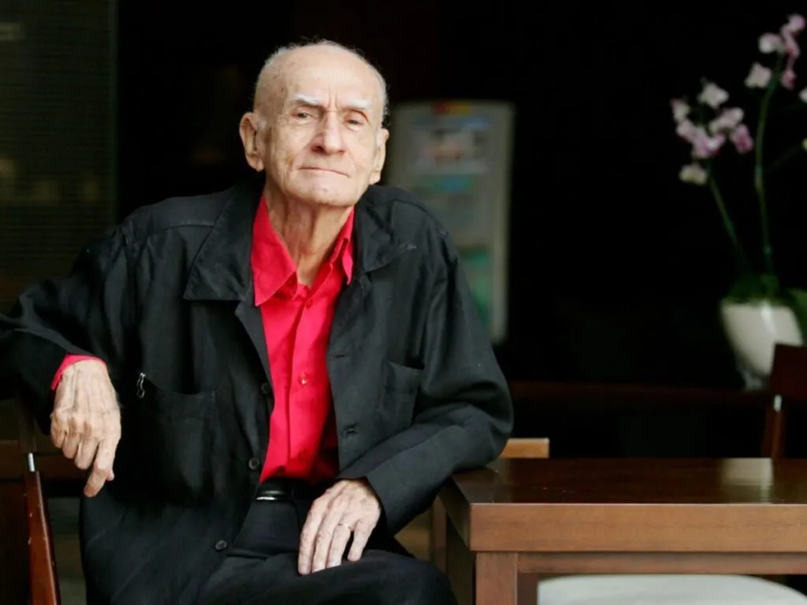
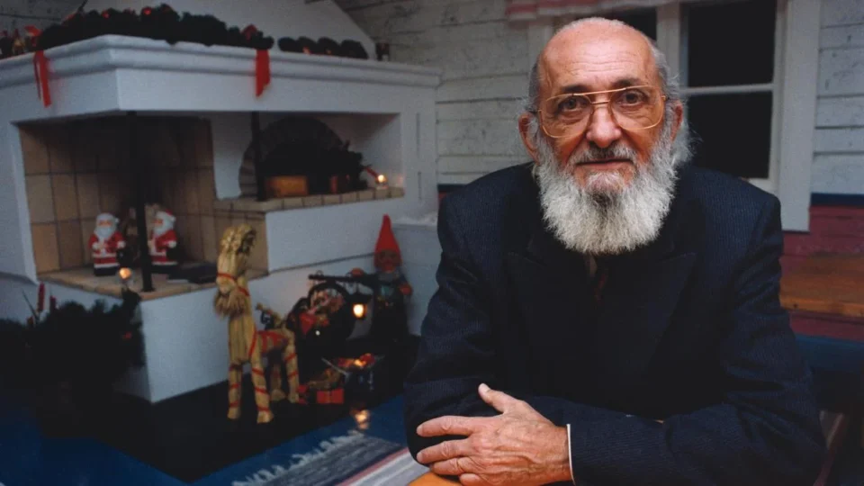
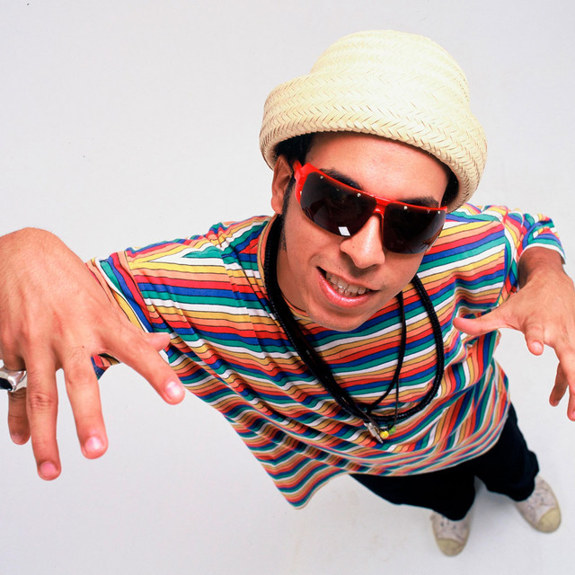

Mauricio de Nassau
1604 - 1679
"Maurício de Nassau governou Recife no século XVII, promovendo avanços urbanos, científicos e culturais."
Uma seleção dos locais imperdíveis que contam a história e a alma da nossa cidade e seus lugares mais conhecidos.


A Rua Bom Jesus, no Recife Antigo, é uma das mais antigas e encantadoras da cidade. Conhecida por suas fachadas coloridas e pelo clima histórico, abriga a Sinagoga Kahal Zur Israel, a primeira das Américas. Aos fins de semana, a rua ganha vida com feirinhas, arte, música e gastronomia. É um ponto turístico vibrante, que mistura cultura, memória e diversidade em um dos cenários mais fotogênicos do Recife.

O Paço do Frevo, no Recife Antigo, é um centro cultural dedicado à preservação e celebração do frevo, patrimônio imaterial brasileiro. Instalado em um prédio histórico, oferece exposições interativas, aulas de dança e pesquisa sobre a música e a cultura carnavalesca. Colorido e vibrante, o espaço mantém viva a tradição, conectando visitantes à energia e à história do ritmo mais marcante de Pernambuco.

O Cais do Sertão, no Recife Antigo, é um museu moderno dedicado à cultura sertaneja e à obra de Luiz Gonzaga. Com tecnologia interativa, música, luz e poesia, o espaço recria cenários do sertão e apresenta sua riqueza simbólica. Misturando tradição e inovação, oferece experiências sensoriais que aproximam o visitante da vida, da arte e do legado do povo nordestino, tornando-se um dos museus mais marcantes do Recife.

A Praia de Boa Viagem é a mais famosa do Recife, co class="personagens"nhecida por seu mar verde-azulado, piscinas naturais formadas por arrecifes e longa faixa de areia clara. Muito frequentada por moradores e turistas, oferece calçadão movimentado, quiosques, ciclovia e áreas para esportes. É um cartão-postal da cidade, com visual vibrante, clima tropical e ótima estrutura urbana, ideal para banho, lazer e contemplação.

O Instituto Ricardo Brennand, na Várzea, é um dos principais espaços culturais do Recife. Instalado em um complexo de arquitetura inspirada em castelos europeus, reúne vasta coleção de armas, armaduras, arte e objetos históricos. Seu acervo inclui pinturas, esculturas e a famosa tapeçaria de Frans Post. Rodeado por belos jardins, o instituto oferece uma imersão única na história e na cultura, sendo um dos museus mais visitados da cidade.
Explore a vida e o Recife foi moldada por pessoas que, com ideias, talentos e ações, marcaram profundamente sua história. Pessoas que contribuíram para a construção cultural, social e política da cidade, ajudando a definir sua identidade e a compreender melhor sua formação.

1604 - 1679
"Maurício de Nassau governou Recife no século XVII, promovendo avanços urbanos, científicos e culturais."

1779 - 1825
"Frei Caneca foi líder revolucionário pernambucano, símbolo da luta por liberdade e justiça no Brasil."

1927 - 2019
"Francisco Brennand foi ceramista e artista pernambucano, criador de obras icônicas em Recife."

1927 - 2014
"Ariano Suassuna foi escritor e dramaturgo pernambucano, mestre da cultura popular nordestina. "

1921 - 1997
"A educação é a arma mais poderosa que você pode usar para mudar o mundo."

1966 - 1997
"A educação é a arma mais poderosa que você pode usar para mudar o mundo."